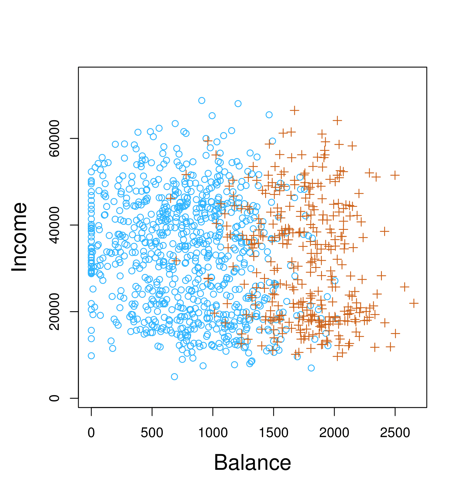
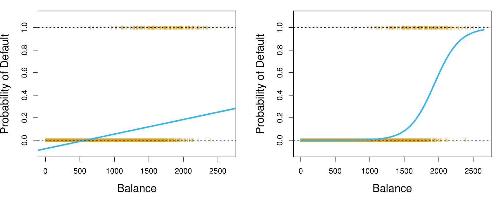
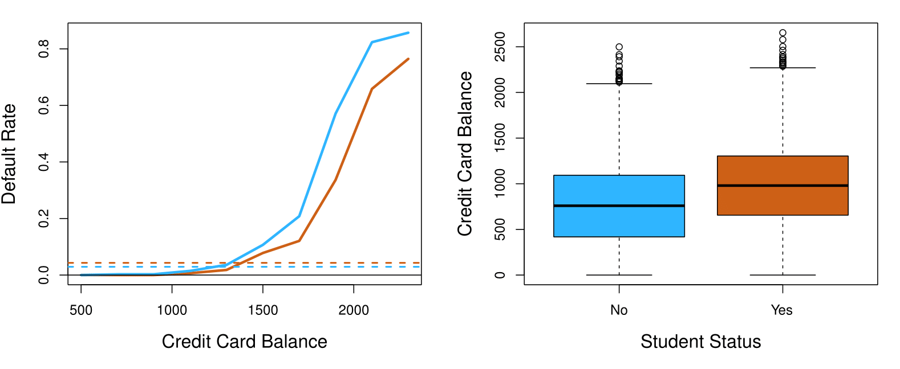
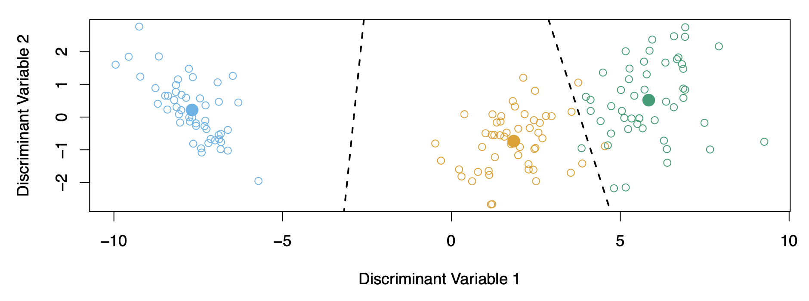
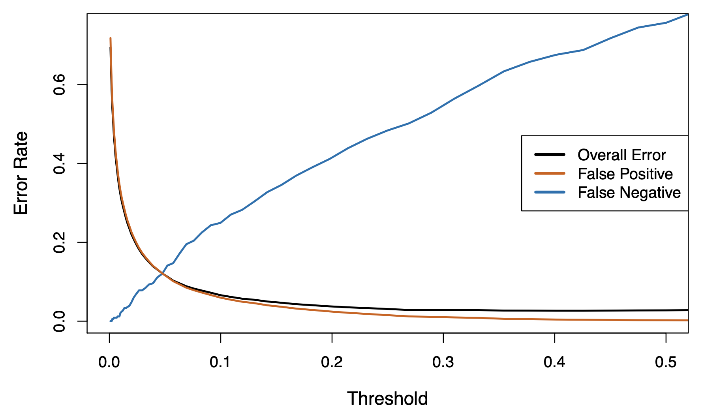
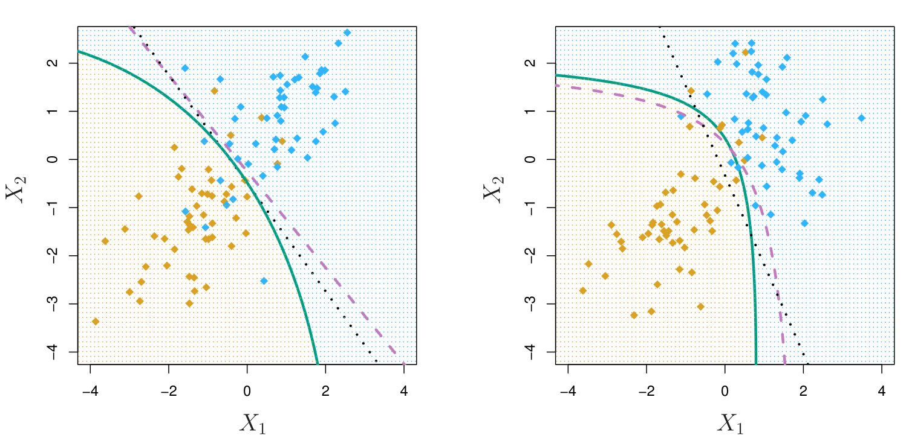
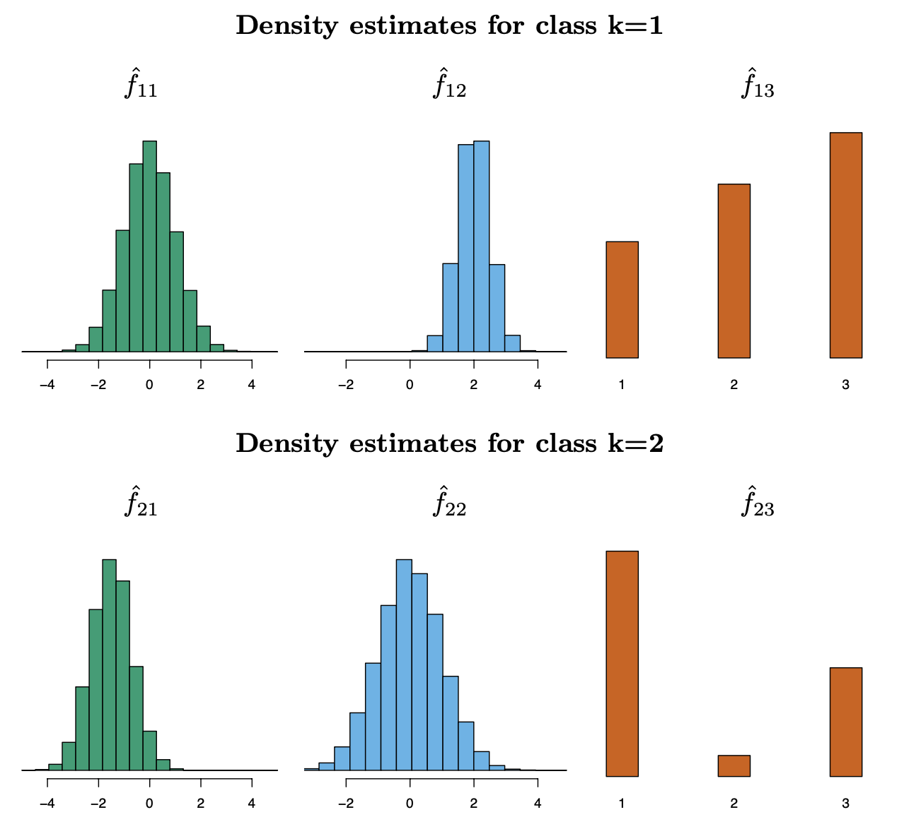

MGMT 47400: Predictive Analytics
Classification
Overview
- Introduction to Classification
- Linear versus Logistic Regression
- Making Predictions
- Multinomial Logistic Regression
- Discriminant Analysis
- Linear Discriminant Analysis when \(p > 1\)
- Types of errors
- Other Forms of Discriminant Analysis
- Naive Bayes
- Generalized Linear Models
This lecture content is inspired by and replicates the material from An Introduction to Statistical Learning.
Motivation
What is a classification problem?

Classification involves categorizing data into predefined classes or groups based on their features.
Classification
Qualitative variables take values in an unordered set \(C\), such as:
- \(\text{eye color} \in \{\text{brown}, \text{blue}, \text{green}\}\)
- \(\text{email} \in \{\text{spam}, \text{ham}\}\)
Given a feature vector \(X\) and a qualitative response \(Y\) taking values in the set \(C\), the classification task is to build a function \(C(X)\) that takes as input the feature vector \(X\) and predicts its value for \(Y\); i.e. \(C(X) \in C\).
Often, we are more interested in estimating the probabilities that \(X\) belongs to each category in \(C\).
- For example, it is more valuable to have an estimate of the probability that an insurance claim is fraudulent, than a classification as fraudulent or not.
Example: Credit Card Default
Scatter plot of income vs. balance with markers indicating whether a person defaulted (e.g., “+” for defaulted, “o” for not defaulted).
Boxplots comparing balance and income for default (“Yes”) vs. no default (“No”).
Can we use Linear Regression?
Suppose for the Default classification task that we code:
\[ Y = \begin{cases} 0 & \text{if No} \\ 1 & \text{if Yes.} \end{cases} \]
Can we simply perform a linear regression of \(Y\) on \(X\) and classify as Yes if \(\hat{Y} > 0.5\)?
- In this case of a binary outcome, linear regression does a good job as a classifier and is equivalent to linear discriminant analysis, which we discuss later.
- Since in the population \(E(Y|X = x) = \Pr(Y = 1|X = x)\), we might think that regression is perfect for this task.
- However, linear regression might produce probabilities less than zero or greater than one. Logistic regression is more appropriate.
Linear versus Logistic Regression: Probability of Default
The orange marks indicate the response \(Y\), either 0 or 1.

Linear Regression continued
Now suppose we have a response variable with three possible values. A patient presents at the emergency room, and we must classify them according to their symptoms.
\[ Y = \begin{cases} 1 & \text{if stroke;} \\ 2 & \text{if drug overdose;} \\ 3 & \text{if epileptic seizure.} \end{cases} \]
This coding suggests an ordering, and in fact implies that the difference between stroke and drug overdose is the same as between drug overdose and epileptic seizure.
Linear regression is not appropriate here. Multiclass Logistic Regression or Discriminant Analysis are more appropriate.
Logistic Regression
Let’s write \(p(X) = \Pr(Y = 1|X)\) for short and consider using balance to predict default. Logistic regression uses the form:
\[ p(X) = \frac{e^{\beta_0 + \beta_1 X}}{1 + e^{\beta_0 + \beta_1 X}}. \]
\((e \approx 2.71828)\) is a mathematical constant Euler’s number.
It is easy to see that no matter what values \(\beta_0\), \(\beta_1\), or \(X\) take, \(p(X)\) will have values between 0 and 1.
A bit of rearrangement gives:
\[ \log\left(\frac{p(X)}{1 - p(X)}\right) = \beta_0 + \beta_1 X. \]
This monotone transformation is called the log odds or logit transformation of \(p(X)\). (By log, we mean natural log: \(\ln\).)
Logistic Regression Transformation
Step 1: Express \(1 - p(X)\)
Since \(p(X) = \frac{e^{\beta_0 + \beta_1 X}}{1 + e^{\beta_0 + \beta_1 X}}\), we can write:
\[ 1 - p(X) = 1 - \frac{e^{\beta_0 + \beta_1 X}}{1 + e^{\beta_0 + \beta_1 X}} \]
Simplify:
\[ 1 - p(X) = \frac{1 + e^{\beta_0 + \beta_1 X} - e^{\beta_0 + \beta_1 X}}{1 + e^{\beta_0 + \beta_1 X}} = \frac{1}{1 + e^{\beta_0 + \beta_1 X}} \]
Logistic Regression Transformation
Step 2: Compute the Odds
The odds are defined as:
\[ \frac{p(X)}{1 - p(X)} \]
Substitute \(p(X)\) and \(1 - p(X)\):
\[ \frac{p(X)}{1 - p(X)} = \frac{\dfrac{e^{\beta_0 + \beta_1 X}}{1 + e^{\beta_0 + \beta_1 X}}} {\dfrac{1}{1 + e^{\beta_0 + \beta_1 X}}} \]
Simplify:
\[ \frac{p(X)}{1 - p(X)} = e^{\beta_0 + \beta_1 X} \]
Logistic Regression Transformation
Step 3: Take the Log of the Odds
Taking the natural logarithm:
\[ \log\!\Bigl(\frac{p(X)}{1 - p(X)}\Bigr) = \log\!\Bigl(e^{\beta_0 + \beta_1 X}\Bigr) \]
Simplify using the log property \(\log(e^x) = x\):
\[ \log\!\Bigl(\frac{p(X)}{1 - p(X)}\Bigr) = \beta_0 + \beta_1 X \]
Logistic Regression Transformation
Conclusion
The final transformation shows that the log-odds (logit) of \(p(X)\) is a linear function of \(X\):
\[ \log\!\Bigl(\frac{p(X)}{1 - p(X)}\Bigr) = \beta_0 + \beta_1 X \]
Linear versus Logistic Regression
Linear versus Logistic Regression
Logistic regression ensures that our estimate for \(p(X)\) lies between 0 and 1.
Maximum Likelihood
We use maximum likelihood to estimate the parameters.
\[ \ell(\beta_0, \beta) = \prod_{i:y_i=1} p(x_i) \prod_{i:y_i=0} (1 - p(x_i)). \]
- The Maximum Likelihood Estimation (MLE) is a method used to estimate the parameters of a model by maximizing the likelihood function, which measures how likely the observed data is given the parameters.
The likelihood function is based on the probability distribution of the data. If you assume that the data points are independent, the likelihood function is the product of the probabilities of each observation.
Considering a data series of observed zeros and ones, and a model for the probabilities involving parameters (e.g., \(\beta_0\) and \(\beta_1\)), for any specific parameter values, we can compute the probability of observing the data.
Since the observations are assumed to be independent, the joint probability of the observed sequence is the product of the probabilities for each observation. For each “1,” we use the model’s predicted probability, \(p(x_i)\), and for each “0,” we use \(1 - p(x_i)\).
The goal of MLE is to find the parameter values that maximize this joint probability, as they make the observed data most likely to have occurred.
Maximum Likelihood Estimation (MLE) Example: Coin Flipping
Suppose you are flipping a coin, and you observe 5 heads out of 10 flips. The coin’s bias (the probability of heads) is \(p\), and you want to estimate \(p\).
The probability of observing a single outcome (heads or tails) follows the Bernoulli distribution:
\[ P(\text{Heads or Tails}) = p^x (1-p)^{1-x}, \quad \text{where } x = 1 \text{ for heads, } x = 0 \text{ for tails.} \]
For 10 independent flips, the likelihood function is:
\[ L(p) = P(\text{data} \mid p) = \prod_{i=1}^{10} p^{x_i}(1-p)^{1-x_i}. \]
If there are 5 heads (\(x=1\)) and 5 tails (\(x=0\)):
\[ L(p) = p^5 (1-p)^5. \]
Maximum Likelihood Estimation (MLE) Example: Coin Flipping
Simplify with the Log-Likelihood
Since multiplying probabilities can result in very small numbers, we take the logarithm of the likelihood (log-likelihood). The logarithm simplifies the product into a sum:
\[ \ell(p) = \log L(p) = \log \left(p^5 (1-p)^5\right) = 5\log(p) + 5\log(1-p). \]
Maximum Likelihood Estimation (MLE) Example: Coin Flipping
Maximize the Log-Likelihood
To find the value of \(p\) that maximizes \(\ell(p)\), take the derivative of the log-likelihood with respect to \(p\) and set it to zero:
\[ \frac{\partial\ell(p)}{\partial p} = \frac{5}{p} - \frac{5}{1-p} = 0. \]
Simplify:
\[ \frac{5}{p} = \frac{5}{1-p}. \]
Solve for \(p\):
\[ 1 - p = p \quad \Rightarrow \quad 1 = 2p \quad \Rightarrow \quad p = 0.5. \]
Maximum Likelihood Estimation (MLE) Example: Coin Flipping
To confirm that \(p = 0.5\) is the maximum, you can check the second derivative of the log-likelihood (concavity) or use numerical methods.
In our example, \(p = 0.5\) makes sense intuitively because the data (5 heads out of 10 flips) suggests the coin is unbiased.
The maximum likelihood estimate of \(p\) is \(0.5\). The MLE method finds the parameter values that make the observed data most likely, given the assumed probability model.
Maximum Likelihood Estimation (MLE) Example: Estimating the Mean of a Normal Distribution
Assumptions:
- Data \(x_1, x_2, \dots, x_n\) are drawn from a normal distribution with:
\[ f(x | \mu, \sigma) = \frac{1}{\sqrt{2\pi \sigma^2}} e^{-\frac{(x - \mu)^2}{2\sigma^2}} \]
- Assume \(\sigma\) is known (say, \(\sigma = 1\)) and we want to estimate \(\mu\).
Maximum Likelihood Estimation (MLE) Example: Estimating the Mean of a Normal Distribution
The likelihood for \(n\) independent observations is:
\[ L(\mu) = \prod_{i=1}^n \frac{1}{\sqrt{2\pi}} e^{-\frac{(x_i - \mu)^2}{2}} \]
Taking the natural log:
\[ \ell(\mu) = \log L(\mu) = \sum_{i=1}^n \left[ -\frac{1}{2} \log(2\pi) - \frac{(x_i - \mu)^2}{2} \right] \]
Simplify (since \(-\frac{1}{2} \log(2\pi)\) is constant):
\[ \ell(\mu) = -\frac{n}{2} \log(2\pi) - \frac{1}{2} \sum_{i=1}^n (x_i - \mu)^2 \]
Maximum Likelihood Estimation (MLE) Example: Estimating the Mean of a Normal Distribution
Differentiate with respect to \(\mu\):
\[ \frac{\partial \ell(\mu)}{\partial \mu} = -\sum_{i=1}^n (x_i - \mu) \] Set this to zero:
\[ \sum_{i=1}^n (x_i - \mu) = 0 \]
Solve for \(\mu\):
\[ \mu = \frac{1}{n} \sum_{i=1}^n x_i \]
The MLE for the mean \(\mu\) is simply the sample mean:
\[ \hat{\mu} = \frac{1}{n} \sum_{i=1}^n x_i \]
Making Predictions
Making Predictions
Most statistical packages can fit linear logistic regression models by maximum likelihood.
Logistic Regression Coefficients
| Coefficient | Std. Error | Z-statistic | P-value | |
|---|---|---|---|---|
| Intercept | -10.6513 | 0.3612 | -29.5 | < 0.0001 |
| balance | 0.0055 | 0.0002 | 24.9 | < 0.0001 |
What is our estimated probability of default for someone with a credit card balance of $1000?
\[ \hat{p}(X) = \frac{e^{\hat{\beta}_0 + \hat{\beta}_1 X}}{1 + e^{\hat{\beta}_0 + \hat{\beta}_1 X}} = \frac{e^{-10.6513 + 0.0055 \times 1000}}{1 + e^{-10.6513 + 0.0055 \times 1000}} = 0.006 \]
With a a credit card balance of $2000?
\[ \hat{p}(X) = \frac{e^{\hat{\beta}_0 + \hat{\beta}_1 X}}{1 + e^{\hat{\beta}_0 + \hat{\beta}_1 X}} = \frac{e^{-10.6513 + 0.0055 \times 2000}}{1 + e^{-10.6513 + 0.0055 \times 2000}} = 0.586 \]
Logistic Regression with Student Predictor
Let’s do it again, using student as the predictor.
Logistic Regression Coefficients
| Coefficient | Std. Error | Z-statistic | P-value | |
|---|---|---|---|---|
| Intercept | -3.5041 | 0.0707 | -49.55 | < 0.0001 |
| student \(Yes\) | 0.4049 | 0.1150 | 3.52 | 0.0004 |
Predicted Probabilities
\[ \hat{\Pr}(\text{default} = \text{Yes} \mid \text{student} = \text{Yes}) = \frac{e^{-3.5041 + 0.4049 \times 1}}{1 + e^{-3.5041 + 0.4049 \times 1}} = 0.0431, \]
\[ \hat{\Pr}(\text{default} = \text{Yes} \mid \text{student} = \text{No}) = \frac{e^{-3.5041 + 0.4049 \times 0}}{1 + e^{-3.5041 + 0.4049 \times 0}} = 0.0292. \]
Logistic Regression with Several Variables
\[ \log\left(\frac{p(X)}{1 - p(X)}\right) = \beta_0 + \beta_1 X_1 + \cdots + \beta_p X_p \]
\[ p(X) = \frac{e^{\beta_0 + \beta_1 X_1 + \cdots + \beta_p X_p}}{1 + e^{\beta_0 + \beta_1 X_1 + \cdots + \beta_p X_p}} \]
Logistic Regression Coefficients
| Coefficient | Std. Error | Z-statistic | P-value | |
|---|---|---|---|---|
| Intercept | -10.8690 | 0.4923 | -22.08 | < 0.0001 |
| balance | 0.0057 | 0.0002 | 24.74 | < 0.0001 |
| income | 0.0030 | 0.0082 | 0.37 | 0.7115 |
| student Yes | -0.6468 | 0.2362 | -2.74 | 0.0062 |
Why is the coefficient for student negative, while it was positive before?
Confounding

Source: Causal Inference Animated Plots
Confounding

Students tend to have higher balances than non-students, so their marginal default rate is higher than for non-students.
But for each level of balance, students default less than non-students.
Multiple logistic regression can tease this out.
Multinomial Logistic Regression
Multinomial Logistic Regression
Logistic regression is frequently used when the response is binary, or \(K = 2\) classes. We need a modification when there are \(K > 2\) classes. E.g. stroke, drug overdose, and epileptic seizure for the emergency room example.
The simplest representation uses different linear functions for each class, combined with the softmax function to form probabilities:
\[ \Pr(Y = k | X = x) = \text{Softmax}(z_k) = \frac{e^{\beta_{k0} + \beta_{k1}x_1 + \cdots + \beta_{kp}x_p}}{\sum_{l=1}^{K} e^{\beta_{l0} + \beta_{l1}x_1 + \cdots + \beta_{lp}x_p}}. \]
- We really only need \(K - 1\) functions (see the book for details).
- We fit by maximizing the multinomial log-likelihood (cross-entropy) — a generalization of the binomial.
- An example will given later in the course, when we fit the 10-class model to the MNIST digit dataset.
What is the Softmax Function?
The softmax function is used in multinomial logistic regression to convert raw scores (logits) into probabilities for multiple classes.
Logits are the raw, untransformed output of the linear component in logistic regression. For a given class \(k\), the logit is defined as:
\[ z_k = \beta_{k0} + \beta_{k1}x_1 + \beta_{k2}x_2 + \cdots + \beta_{kp}x_p \]
Where:
- \(z_k\): The logit for class \(k\).
- \(\beta_{k0}\): Intercept term.
- \(\beta_{kj}\): Coefficients for predictor \(x_j\).
Softmax Definition:
For \(K\) classes and input \(x\), the softmax function is defined as:
\[ \text{Softmax}(z_k) = \frac{e^{z_k}}{\sum_{l=1}^K e^{z_l}} \]
Where:
- \(z_k = \beta_{k0} + \beta_{k1}x_1 + \beta_{k2}x_2 + \cdots + \beta_{kp}x_p\): The linear score (logit) for class \(k\).
- \(\beta_{k0}, \beta_{k1}, \dots, \beta_{kp}\): Coefficients for class \(k\).
- \(e^{z_k}\): Exponentiated score for class \(k\), ensuring all values are positive.
Key Features of the Softmax Function
Probability Distribution: Outputs probabilities that sum to 1 across all \(K\) classes. \(\text{Pr}(Y = k \mid X = x) = \text{Softmax}(z_k)\).
Normalization: Normalizes logits by dividing each exponentiated logit by the sum of all exponentiated logits.
Handles Multiclass Classification: Extends binary logistic regression to \(K > 2\) classes.
Example of Softmax in Action
Imagine classifying three emergency room conditions: Stroke, Drug Overdose, and Epileptic Seizure.
Suppose the logits are: \(z_{\text{stroke}} = 2.5, \quad z_{\text{drug overdose}} = 1.0, \quad z_{\text{epileptic seizure}} = 0.5\)
The probabilities are:
\[ \text{Softmax}(z_k) = \frac{e^{z_k}}{e^{2.5} + e^{1.0} + e^{0.5}} \]
Step 1: Exponentiate the Logits
\(e^{z_{\text{stroke}}} = e^{2.5} \approx 12.182\)
\(e^{z_{\text{drug overdose}}} = e^{1.0} \approx 2.718\)
\(e^{z_{\text{epileptic seizure}}} = e^{0.5} \approx 1.649\)
Step 2: Compute the Denominator
\(\sum_{l=1}^K e^{z_l} = e^{2.5} + e^{1.0} + e^{0.5}\)
\(\sum_{l=1}^K e^{z_l} \approx 12.182 + 2.718 + 1.649 = 16.549\)
Step 3: Calculate the Probabilities
\(\text{Pr}(\text{stroke}) = \frac{e^{z_{\text{stroke}}}}{\sum_{l=1}^K e^{z_l}} = \frac{12.182}{16.549} \approx 0.7366\)
\(\text{Pr}(\text{drug overdose}) = \frac{e^{z_{\text{drug overdose}}}}{\sum_{l=1}^K e^{z_l}} = \frac{2.718}{16.549} \approx 0.1642\)
\(\text{Pr}(\text{epileptic seizure}) = \frac{e^{z_{\text{epileptic seizure}}}}{\sum_{l=1}^K e^{z_l}} = \frac{1.649}{16.549} \approx 0.0996\)
The output probabilities represent the likelihood of each condition, ensuring:
\[ \sum_{k=1}^3 \text{Pr}(Y = k) = 1 \]
We have:
\[ 0.7366 + 0.1642 + 0.0996 \approx 1.000 \]
Conclusion
The softmax function translates raw scores into probabilities, making it essential for multiclass classification.
It ensures a probabilistic interpretation while maintaining normalization across all classes.
Discriminant Analysis
Discriminant Analysis
Here the approach is to model the distribution of \(X\) in each of the classes separately, and then use Bayes theorem to flip things around and obtain \(\Pr(Y \mid X)\).
When we use normal (Gaussian) distributions for each class, this leads to linear or quadratic discriminant analysis.
However, this approach is quite general, and other distributions can be used as well. We will focus on normal distributions as input for \(f_k(x)\).
Bayes Theorem for Classification
Thomas Bayes was a famous mathematician whose name represents a big subfield of statistical and probabilistic modeling. Here we focus on a simple result, known as Bayes theorem:
\[ \Pr(Y = k \mid X = x) = \frac{\Pr(X = x \mid Y = k) \cdot \Pr(Y = k)}{\Pr(X = x)} \]
One writes this slightly differently for discriminant analysis:
\[ \Pr(Y = k \mid X = x) = \frac{\pi_k f_k(x)}{\sum_{\ell=1}^K \pi_\ell f_\ell(x)}, \quad \text{where} \]
\(f_k(x) = \Pr(X = x \mid Y = k)\) is the density for \(X\) in class \(k\). Here we will use normal densities for these, separately in each class.
\(\pi_k = \Pr(Y = k)\) is the marginal or prior probability for class \(k\).
Bayes’ Theorem: Explanation
It describes the probability of an event, based on prior knowledge of conditions that might be related to the event.
\[ P(A|B) = \frac{P(B|A) \cdot P(A)}{P(B)} \]
\(P(A|B)\): Posterior probability - Probability of event \(A\) occurring given that \(B\) is true — updated probability after the evidence is considered.
\(P(A)\): Prior probability - Initial probability of event \(A\) — the probability before the evidence is considered.
\(P(B|A)\): Likelihood - Probability of observing event \(B\) given that \(A\) is true.
\(P(B)\): Marginal probability - Total probability of the evidence, event \(B\).
Understanding Conditional Probability
Conditional probability is the probability of an event occurring given that another event has already occurred.
Definition:
\[ P(A|B) = \frac{P(A \cap B)}{P(B)} \]
is the probability of event \(A\) occurring given that \(B\) is true.
- Interpretation: How likely is \(A\) if we know that \(B\) happens?
What is Joint Probability?
Joint probability refers to the probability of two events occurring together.
Definition: \(P(A \cap B)\) is the probability that both \(A\) and \(B\) occur.
Connection to Conditional Probability:
\[ P(A \cap B) = P(A|B) \cdot P(B) \]
\[ P(B \cap A) = P(B|A) \cdot P(A) \]
This formula is crucial for understanding Bayes’ Theorem.
Symmetry in Joint Events
Joint probability is symmetric, meaning:
\[ P(A \cap B) = P(B \cap A) \]
Thus, we can also express it as:
\[ P(A \cap B) = P(B|A) \cdot P(A) \]
This symmetry is the key to deriving Bayes’ Theorem.
Deriving Bayes’ Theorem
Given that the definition of Conditional Probability is:
\[ P(A|B) = \frac{P(A \cap B)}{P(B)} \]
- Using the Definition of Joint Probability:
\[ P(A \cap B) = P(A|B) \cdot P(B) \]
\[ P(B \cap A) = P(B|A) \cdot P(A) \]
- Symmetry of Joint Probability:
\[ P(A \cap B) = P(B \cap A) \]
Thus, we can express the joint probability as:
\[ P(A \cap B) = P(B|A) \cdot P(A) \]
- The Bayes’ Theorem!
Substitute this back into the conditional probability definition:
\[ P(A|B) = \frac{P(B|A) \cdot P(A)}{P(B)} \]
Why Bayes’ Theorem Matters?
Bayes’ Theorem is a foundational principle in probability theory and statistics, enabling:
Incorporation of Prior Knowledge:
It allows for the integration of prior knowledge or beliefs when making statistical inferences.Beliefs Update:
It provides a systematic way to update the probability estimates as new evidence or data becomes available.Probabilistic Thinking:
Encourages a probabilistic approach to decision-making, quantifying uncertainty, and reasoning under uncertainty.Versatility in Applications:
From medical diagnosis to spam filtering, Bayes’ Theorem is pivotal in areas requiring probabilistic assessment.
Bayes’ Theorem is a paradigm that shapes the way we interpret and interact with data, offering a powerful tool for learning from information and making decisions in an uncertain world.
Classify to the Highest Density
Left-hand plot: single variable X and \(\pi_k f_k(x)\) in the vertical axis for both classes \(k\) equals 1 and \(k\) equals 2. In this case the the pies are the same for both, so anything to the left of zero we classify as as green and anything to the right we classify as as purple.
Right-hand plot: here we have different priors. The probability of \(k = 2\) is 0.7 and and of of \(k= 1\) is 0.3. The decision boundary moved slightly to the left. On the right, we favor the pink class.
Why Discriminant Analysis?
When the classes are well-separated, the parameter estimates for the logistic regression model are surprisingly unstable. Linear discriminant analysis does not suffer from this problem.
If \(n\) is small and the distribution of the predictors \(X\) is approximately normal in each of the classes, the linear discriminant model is again more stable than the logistic regression model.
Linear discriminant analysis is popular when we have more than two response classes, because it also provides low-dimensional views of the data.
Linear Discriminant Analysis when \(p = 1\)
The Gaussian density has the form:
\[ f_k(x) = \frac{1}{\sqrt{2\pi\sigma_k}} e^{-\frac{1}{2} \left( \frac{x - \mu_k}{\sigma_k} \right)^2} \]
Here \(\mu_k\) is the mean, and \(\sigma_k^2\) the variance (in class \(k\)). We will assume that all the \(\sigma_k = \sigma\) are the same.
Plugging this into Bayes formula, we get a rather complex expression for \(p_k(x) = \Pr(Y = k \mid X = x)\):
\[ p_k(x) = \frac{\pi_k \frac{1}{\sqrt{2\pi\sigma}} e^{-\frac{1}{2} \left( \frac{x - \mu_k}{\sigma} \right)^2}}{\sum_{\ell=1}^K \pi_\ell \frac{1}{\sqrt{2\pi\sigma}} e^{-\frac{1}{2} \left( \frac{x - \mu_\ell}{\sigma} \right)^2}} \]
Happily, there are simplifications and cancellations.
Discriminant Functions
To classify one observation at the value \(X = x\) into a class, we need to see which of the \(p_k(x)\) is largest. Taking logs, and discarding terms that do not depend on \(k\), we see that this is equivalent to assigning \(x\) to the class with the largest discriminant score:
\[ \delta_k(x) = x \cdot \frac{\mu_k}{\sigma^2} - \frac{\mu_k^2}{2\sigma^2} + \log(\pi_k) \]
Note that \(\delta_k(x)\) is a linear function of \(x\).
If there are \(K = 2\) classes and \(\pi_1 = \pi_2 = 0.5\), then one can see that the decision boundary is at:
\[ x = \frac{\mu_1 + \mu_2}{2}. \]
Example: Estimating Parameters for Discriminant Analysis
Left-Panel: Synthetic population data with \(\mu_1 = -1.5\), \(\mu_2 = 1.5\), \(\pi_1 = \pi_2 = 0.5\), and \(\sigma^2 = 1\).
Typically, we don’t know these parameters; we just have the training data. In that case, we simply estimate the parameters and plug them into the rule.
Right-Panel: histograms of the sample. We see that the estimation provided a decision boundary (black solid line) pretty close to the correct one, the one of the population.
Estimating the Parameters
The prior is the number in each class divided by the total number:
\[ \hat{\pi}_k = \frac{n_k}{n} \]
The means in each class is the sample mean:
\[ \hat{\mu}_k = \frac{1}{n_k} \sum_{i: y_i = k} x_i \]
We assume that the variance is the same in each of the classes and so we assume a pooled variance estimate:
\[ \hat{\sigma}^2 = \frac{1}{n - K} \sum_{k=1}^K \sum_{i: y_i = k} (x_i - \hat{\mu}_k)^2 \]
\[ = \sum_{k=1}^K \frac{n_k - 1}{n - K} \cdot \hat{\sigma}_k^2 \]
where \(\hat{\sigma}_k^2 = \frac{1}{n_k - 1} \sum_{i: y_i = k} (x_i - \hat{\mu}_k)^2\) is the usual formula for the estimated variance in the \(k\)-th class.
Linear Discriminant Analysis when \(p > 1\)
Linear Discriminant Analysis when \(p > 1\)
Gaussian density in two Dimensions, two variables \(x_1\) and \(x_2\). On the Left-panel, we have a bell function and this is the case when the two variables are uncorrelated. On the Right-panel, there is correlation between the two predictors and it is like a stretched bell.
Density:
\[f(x) = \frac{1}{(2\pi)^{p/2} |\Sigma|^{1/2}} e^{-\frac{1}{2}(x - \mu)^T \Sigma^{-1} (x - \mu)}\] where \(\Sigma\) is the covariance matrix.
Covariance Matrix
The covariance matrix is a square matrix that summarizes the covariance (a measure of how much two random variables vary together) between multiple variables in a dataset.
Definition:
For a random vector \(X = [X_1, X_2, \dots, X_p]^\top\) with \(p\) variables, the covariance matrix \(\Sigma\) is defined as:
\[ \Sigma = \begin{bmatrix} \text{Var}(X_1) & \text{Cov}(X_1, X_2) & \cdots & \text{Cov}(X_1, X_p) \\ \text{Cov}(X_2, X_1) & \text{Var}(X_2) & \cdots & \text{Cov}(X_2, X_p) \\ \vdots & \vdots & \ddots & \vdots \\ \text{Cov}(X_p, X_1) & \text{Cov}(X_p, X_2) & \cdots & \text{Var}(X_p) \end{bmatrix} \]
Key Properties:
- \(\text{Var}(X_i)\): Variance of variable \(X_i\).
- \(\text{Cov}(X_i, X_j)\): Covariance between variables \(X_i\) and \(X_j\).
- \(\Sigma\) is symmetric: \(\text{Cov}(X_i, X_j) = \text{Cov}(X_j, X_i)\).
- Diagonal elements represent variances, and off-diagonal elements represent covariances.
Linear Discriminant Analysis when \(p > 1\)
Discriminant function: after simplifying the density function we can find
\[\delta_k(x) = x^T \Sigma^{-1} \mu_k - \frac{1}{2} \mu_k^T \Sigma^{-1} \mu_k + \log \pi_k\]
Note that it is a linear function where the first component, \(x^T \Sigma^{-1} \mu_k\), has the \(x\) variable multiplied by a coefficient vector and, the second component, \(\frac{1}{2} \mu_k^T \Sigma^{-1} \mu_k + \log \pi_k\), is a constant.
Linear Discriminant Analysis when \(p > 1\)
The Discriminant function can be written as
\[\delta_k(x) = c_{k0} + c_{k1}x_1 + c_{k2}x_2 + \cdots + c_{kp}x_p\]
a linear function. That is a function for class \(k\), where \(c_{k0}\) represents the constant we find in the second component of the Discriminant function and \(c_{k1}x_1 + c_{k2}x_2 + \cdots + c_{kp}x_p\) come from the first component of the Discriminant function. We compute \(\delta_k(x)\) for each of the classes and then you classify to the class for which it is largest.
Illustration: \(p = 2\) and \(K = 3\) classes

Left-panel: The circle presents the countor of the density of a particular level of probability for the blue, green, and the orange class. Here \(\pi_1 = \pi_2 = \pi_3 = \frac{1}{3}\). The dashed lines are known as the Bayes decision boundaries. They are the “True” decision boundaries, were they known, they would yield the fewest misclassification errors, among all possible classifiers.
Right-panel: We compute the mean for \(x_1\) and \(x_2\) for the each blue, green, and orange class. After plugging them into the formula, instead of getting the the dotted lines we get the solid black lines.
Example: Fisher’s Iris Data
Example: Fisher’s Iris Data
- 4 variables
- 3 species
- 50 samples/class
- 🟦 Setosa
- 🟧 Versicolor
- 🟩 Virginica
- LDA classifies all but 3 of the 150 training samples correctly.
Example: Fisher’s Discriminant Plot

- Discriminant variables 1 and 2 are linear combinations of the original variables.
- LDA classifies points based on their proximity to centroids in discriminant space.
- The centroids lie in a subspace of the multi-dimensional space (e.g., a plane within 4D space).
- For \(K\) classes:
- LDA can be visualized in \(K - 1\)-dimensional space.
- For \(K > 3\), the “best” 2D plane can be chosen for visualization.
From \(\delta_k(x)\) to Probabilities
- Once we have estimates of the Discriminat Functions, \(\hat{\delta}_k(x)\), we can turn these into estimates for class probabilities:
\[ \hat{\Pr}(Y = k | X = x) = \frac{e^{\hat{\delta}_k(x)}}{\sum_{l=1}^K e^{\hat{\delta}_l(x)}}. \]
So classifying to the largest \(\hat{\delta}_k(x)\) amounts to classifying to the class for which \(\hat{\Pr}(Y = k | X = x)\) is largest.
When \(K = 2\), we classify to class 2 if \(\hat{\Pr}(Y = 2 | X = x) \geq 0.5\), else to class 1.
LDA on Credit Data
# Load the knitr package
library(knitr)
library(kableExtra)
# Create the data frame for the table with bold first column
table_data <- data.frame(
` ` = c("No",
"Yes",
"Total"),
`True Default Status: No` = c(9644, 23, 9667),
`True Default Status: Yes` = c(252, 81, 333),
`Total` = c(9896, 104, 10000)
)
# Generate the table
kable(table_data, "html", escape = FALSE, align = "c",
col.names = c("Predicted Default Status", "No", "Yes", "Total")) %>%
kable_styling(full_width = FALSE, position = "center") %>%
add_header_above(c(" " = 1, "True Default Status" = 3), italic = T) %>%
row_spec(0, bold = TRUE, italic = TRUE) %>% # Make headers bold and italic
column_spec(1, bold = TRUE)| Predicted Default Status | No | Yes | Total |
|---|---|---|---|
| No | 9644 | 252 | 9896 |
| Yes | 23 | 81 | 104 |
| Total | 9667 | 333 | 10000 |
- \(\frac{23 + 252}{10000}\) errors — a 2.75% misclassification rate!
Some caveats:
This is training error, and we may be overfitting.
If we classified to the prior, the proportion of cases in the classes (e.g. always assuming the class No default). We would make \(\frac{333}{10000}\) errors, or only 3.33%. This is what we call the null rate.
We can break the errors into different kinds: of the true No’s, we make \(\frac{23}{9667} = 0.2\%\) errors; of the true Yes’s, we make \(\frac{252}{333} = 75.7\%\) errors!
Types of errors
Types of errors
False positive rate: The fraction of negative examples that are classified as positive — 0.2% in example.
False negative rate: The fraction of positive examples that are classified as negative — 75.7% in example.
We produced this table by classifying to class Yes if:
\[ \hat{P}(\text{Default} = \text{Yes} \mid \text{Balance}, \text{Student}) \geq 0.5 \]
We can change the two error rates by changing the threshold from \(0.5\) to some other value in \([0, 1]\):
\[ \hat{P}(\text{Default} = \text{Yes} \mid \text{Balance}, \text{Student}) \geq \text{threshold}, \]
and vary \(\text{threshold}\).
Varying the threshold

In order to reduce the false negative rate, we may want to reduce the threshold to 0.1 or less.
ROC Curve
The ROC plot displays both simultaneously.
Sometimes we use the AUC or area under the curve to summarize the overall performance. Higher AUC is good.
Other Forms of Discriminant Analysis
Other Forms of Discriminant Analysis
When \(f_k(x)\) are Gaussian densities, with the same covariance matrix \(\Sigma\) in each class, this leads to linear discriminant analysis.
\[ \Pr(Y = k|X = x) = \frac{\pi_k f_k(x)}{\sum_{l=1}^{K} \pi_l f_l(x)} \]
By altering the forms for \(f_k(x)\), we get different classifiers:
- With Gaussians but different \(\Sigma_k\) in each class, we get quadratic discriminant analysis.
- With \(f_k(x) = \prod_{j=1}^{p} f_{jk}(x_j)\) (conditional independence model) in each class, we get naive Bayes. For Gaussians, this means \(\Sigma_k\) are diagonal.
- Many other forms, by proposing specific density models for \(f_k(x)\), including nonparametric approaches.
Quadratic Discriminant Analysis

\[ \delta_k(x) = -\frac{1}{2}(x - \mu_k)^T \Sigma_k^{-1}(x - \mu_k) + \log \pi_k - \frac{1}{2} \log |\Sigma_k| \]
In the Left-plot we see a case when the true boundary should be linear. In the Right-plot, covariances were different in the true data. It is possible to see that the bayes decision boundary is curved and the quadratic discriminant analysis is also curved whereas the linear discriminant analysis gives a different boundary.
Whether each class has the same or different covariance matrices significantly impacts how boundaries between the classes are defined. The covariance matrix describes the spread or variability of data points within each class and how the features in that class relate to each other.
- Key Insight: If \(\Sigma_k\) are different for each class, the quadratic terms matter significantly.
- QDA allows for non-linear decision boundaries due to unique covariance matrices for each class.
- Example: Suppose we are classifying plants based on two features (e.g., height and leaf width). If one type of plant has a tall and narrow spread of data, while another type has a short and wide spread, QDA can handle these differences and draw curved boundaries to separate the groups.
Assess the Covariance Matrices
LDA assumes the covariance matrices of all classes are the same, while QDA allows each class to have its own. To determine which assumption is better:
- Hypothesys test: we can perform a Test for Equality of Covariance Matrices (e.g. Box’s M Test). If the covariance matrices are similar (test is not significant): LDA is appropriate. If the covariance matrices differ (test is significant): QDA may be better.
- Visual Inspection: Plot the data in two dimensions (e.g., using scatterplots). Check if the spread, shape, or orientation of data points differs significantly between classes. If they are similar, LDA might work well. If they are visibly different, QDA is likely better.
- Compare Model Performance: run both models and choose the model that performs better on unseen data (test set).
- Consider the Number of Features and Data Size: LDA performs well with smaller datasets because it estimates a single covariance matrix across all classes (fewer parameters). QDA requires a larger dataset because it estimates a separate covariance matrix for each class (more parameters).
- Domain Knowledge: Use your understanding of the data to decide.
Logistic Regression versus LDA
For a two-class problem, one can show that for LDA:
\[ \log \left( \frac{p_1(x)}{1 - p_1(x)} \right) = \log \left( \frac{p_1(x)}{p_2(x)} \right) = c_0 + c_1 x_1 + \dots + c_p x_p \]
if we take the log odds, \(\log \left( \frac{p_1(x)}{1 - p_1(x)}\right)\), which is the log of the probability for class 1 versus the probability for class two, we endup with a linear function of \(x\), \(c_0 + c_1 x_1 + \dots + c_p x_p\). So it has the same form as logistic regression.
The difference lies in how the parameters are estimated.
Logistic regression uses the conditional likelihood based on \(\text{Pr}(Y|X)\). In Machine Learning, it is known as discriminative learning.
LDA uses the full likelihood based on the joint distributions of \(x's\) and \(y's\), \(\text{Pr}(X, Y)\), whereas logistic regression was only using the distribution of \(y's\). It is known as generative learning.
Despite these differences, in practice, the results are often very similar.
- Logistic regression can also fit quadratic boundaries like QDA by explicitly including quadratic terms in the model.
Naive Bayes
Naive Bayes
- Assumes features are independent in each class.
- Useful when \(p\) is large, and so multivariate methods like QDA and even LDA break down.
Gaussian Naive Bayes assumes each \(\Sigma_k\) is diagonal:
\[ \begin{aligned} \delta_k(x) &\propto \log \left[ \pi_k \prod_{j=1}^p f_{kj}(x_j) \right] \\ &= -\frac{1}{2} \sum_{j=1}^p \left[ \frac{(x_j - \mu_{kj})^2}{\sigma_{kj}^2} + \log \sigma_{kj}^2 \right] + \log \pi_k \end{aligned} \]
Can be used for mixed feature vectors (qualitative and quantitative). If \(X_j\) is qualitative, replace \(f_{kj}(x_j)\) with the probability mass function (histogram) over discrete categories.
Key Point: Despite strong assumptions, naive Bayes often produces good classification results.
Explanation:
- \(\pi_k\): Prior probability of class \(k\).
- \(f_{kj}(x_j)\): Density function for feature \(j\) in class \(k\).
- \(\mu_{kj}\): Mean of feature \(j\) in class \(k\).
- \(\sigma_{kj}^2\): Variance of feature \(j\) in class \(k\).
Diagonal Covariance Matrix
A diagonal covariance matrix is a special case of the covariance matrix where all off-diagonal elements are zero. This implies that the variables are uncorrelated.
General Form:
For \(p\) variables, a diagonal covariance matrix \(\Sigma\) is represented as:
\[ \Sigma = \begin{bmatrix} \sigma_1^2 & 0 & \cdots & 0 \\ 0 & \sigma_2^2 & \cdots & 0 \\ \vdots & \vdots & \ddots & \vdots \\ 0 & 0 & \cdots & \sigma_p^2 \end{bmatrix} \]
Properties:
Diagonal Elements (\(\sigma_i^2\)): Represent the variance of each variable \(X_i\).
Off-Diagonal Elements: All equal to zero (\(\text{Cov}(X_i, X_j) = 0\) for \(i \neq j\)), indicating no linear relationship between variables.
A diagonal covariance matrix assumes independence between variables. Each variable varies independently without influencing the others.
Commonly used in simpler models, such as Naive Bayes, where independence is assumed.
Generative Models and Naïve Bayes
Logistic regression models \(\Pr(Y = k | X = x)\) directly, via the logistic function. Similarly, the multinomial logistic regression uses the softmax function. These all model the conditional distribution of \(Y\) given \(X\).
By contrast, generative models start with the conditional distribution of \(X\) given \(Y\), and then use Bayes formula to turn things around:
\[ \Pr(Y = k | X = x) = \frac{\pi_k f_k(x)}{\sum_{l=1}^{K} \pi_l f_l(x)}. \]
- \(f_k(x)\) is the density of \(X\) given \(Y = k\);
- \(\pi_k = \Pr(Y = k)\) is the marginal probability that \(Y\) is in class \(k\).
Generative Models and Naïve Bayes
- Linear and quadratic discriminant analysis derive from generative models, where \(f_k(x)\) are Gaussian.
- Useful if some classes are well separated. A situation where logistic regression is unstable.
- Naïve Bayes assumes that the densities \(f_k(x)\) in each class factor:
\[ f_k(x) = f_{k1}(x_1) \times f_{k2}(x_2) \times \cdots \times f_{kp}(x_p) \]
- Equivalently, this assumes that the features are independent within each class.
- Then using Bayes formula:
\[ \Pr(Y = k | X = x) = \frac{\pi_k \times f_{k1}(x_1) \times f_{k2}(x_2) \times \cdots \times f_{kp}(x_p)}{\sum_{l=1}^{K} \pi_l \times f_{l1}(x_1) \times f_{l2}(x_2) \times \cdots \times f_{lp}(x_p)} \]
Naïve Bayes — Details
Why the independence assumption?
Difficult to specify and model high-dimensional densities.
Much easier to specify one-dimensional densities.Can handle mixed features:
- If feature \(j\) is quantitative, can model as univariate Gaussian, for example: \(X_j \mid Y = k \sim N(\mu_{jk}, \sigma_{jk}^2).\) We estimate \(\mu_{jk}\) and \(\sigma_{jk}^2\) from the data, and then plug into Gaussian density formula for \(f_{jk}(x_j)\).
- Alternatively, can use a histogram estimate of the density, and directly estimate \(f_{jk}(x_j)\) by the proportion of observations in the bin into which \(x_j\) falls.
- If feature \(j\) is qualitative, can simply model the proportion in each category.
Somewhat unrealistic but extremely useful in many cases.
Despite its simplicity, often shows good classification performance due to reduced variance.
Naïve Bayes — Toy Example

This toy example demonstrates the working of the Naïve Bayes classifier for two classes (\(k = 1\) and \(k = 2\)) and three features (\(X_1, X_2, X_3\)). The goal is to compute the posterior probabilities \(\Pr(Y = 1 \mid X = x^*)\) and \(\Pr(Y = 2 \mid X = x^*)\) for a given observation \(x^* = (0.4, 1.5, 1)\).
The prior probabilities for each class are:
\(\hat{\pi}_1 = \hat{\pi}_2 = 0.5\)
For each feature (\(X_1, X_2, X_3\)), we estimate the class-conditional density functions:
- \(\hat{f}_{11}, \hat{f}_{12}, \hat{f}_{13}\): Densities for \(k = 1\) (class 1).
\(\hat{f}_{11}(0.4) = 0.368 \\\)
\(\hat{f}_{12}(1.5) = 0.484 \\\)
\(\hat{f}_{13}(1) = 0.226 \\\)
- \(\hat{f}_{21}, \hat{f}_{22}, \hat{f}_{23}\): Densities for \(k = 2\) (class 2).
\(\hat{f}_{21}(0.4) = 0.030 \\\)
\(\hat{f}_{22}(1.5) = 0.130 \\\)
\(\hat{f}_{23}(1) = 0.616 \\\)
Naïve Bayes — Toy Example
- Compute Class-Conditional Likelihoods for each class \(k\), the likelihood is computed as the product of the conditional densities for each feature:
\[ \hat{f}_k(x^*) = \prod_{j=1}^3 \hat{f}_{kj}(x_j^*) \]
- For \(k = 1\):
\[ \hat{f}_{11}(0.4) = 0.368, \quad \hat{f}_{12}(1.5) = 0.484, \quad \hat{f}_{13}(1) = 0.226 \]
\[ \hat{f}_1(x^*) = 0.368 \times 0.484 \times 0.226 \approx 0.0402 \]
- For \(k = 2\):
\[ \hat{f}_{21}(0.4) = 0.030, \quad \hat{f}_{22}(1.5) = 0.130, \quad \hat{f}_{23}(1) = 0.616 \]
\[ \hat{f}_2(x^*) = 0.030 \times 0.130 \times 0.616 \approx 0.0024 \]
- Compute Posterior Probabilities using Bayes’ theorem:
\[ \Pr(Y = k \mid X = x^*) = \frac{\hat{\pi}_k \hat{f}_k(x^*)}{\sum_{k=1}^2 \hat{\pi}_k \hat{f}_k(x^*)} \]
For \(k = 1\): \[ \Pr(Y = 1 \mid X = x^*) = \frac{0.5 \times 0.0402}{(0.5 \times 0.0402) + (0.5 \times 0.0024)} \approx 0.944 \]
For \(k = 2\): \[ \Pr(Y = 2 \mid X = x^*) = \frac{0.5 \times 0.0024}{(0.5 \times 0.0402) + (0.5 \times 0.0024)} \approx 0.056 \]
Key Takeaways:
Naïve Bayes Assumption: The assumption of feature independence simplifies computation by allowing the class-conditional densities to be computed separately for each feature.
Posterior Probabilities: The posterior probability combines the prior (\(\pi_k\)) and the likelihood (\(\hat{f}_k(x^*)\)).
Classification: The observation \(x^*\) is classified as the class with the highest posterior probability (\(Y = 1\)).
Naïve Bayes and GAMs
Naïve Bayes classifier can be understood as a special case of a GAM.
\[ \begin{aligned} \log \left( \frac{\Pr(Y = k \mid X = x)}{\Pr(Y = K \mid X = x)} \right) &= \log \left( \frac{\pi_k f_k(x)}{\pi_K f_K(x)} \right) \\ &= \log \left( \frac{\pi_k \prod_{j=1}^p f_{kj}(x_j)}{\pi_K \prod_{j=1}^p f_{Kj}(x_j)} \right) \\ &= \log \left( \frac{\pi_k}{\pi_K} \right) + \sum_{j=1}^p \log \left( \frac{f_{kj}(x_j)}{f_{Kj}(x_j)} \right) \\ &= a_k + \sum_{j=1}^p g_{kj}(x_j), \end{aligned} \]
where \(a_k = \log \left( \frac{\pi_k}{\pi_K} \right)\) and \(g_{kj}(x_j) = \log \left( \frac{f_{kj}(x_j)}{f_{Kj}(x_j)} \right)\).
Hence, the Naïve Bayes model is a Generalized Additive Model (GAM):
- The log-odds are expressed as a sum of additive terms.
- \(a_k\): Represents prior influence.
- \(g_{kj}(x_j)\): Represents feature contributions.
Naïve Bayes and GAMs: details
Log-Odds of Posterior Probabilities
The Naïve Bayes classifier starts with the log-odds of the posterior probabilities:
\[ \log \left( \frac{\Pr(Y = k \mid X = x)}{\Pr(Y = K \mid X = x)} \right) \]
This is the log of the ratio of the probabilities of class \(k\) and a reference class \(K\), given the feature vector \(X = x\).
Naïve Bayes and GAMs: details
Bayes’ Theorem
Using Bayes’ theorem, the posterior probabilities can be expressed as:
\[ \log \left( \frac{\Pr(Y = k \mid X = x)}{\Pr(Y = K \mid X = x)} \right) = \log \left( \frac{\pi_k f_k(x)}{\pi_K f_K(x)} \right) \]
- \(\pi_k\): Prior probability of class \(k\).
- \(f_k(x)\): Class-conditional density for class \(k\).
Naïve Bayes and GAMs: details
Naïve Bayes Assumption
The Naïve Bayes assumption states that features are conditionally independent given the class:
\[ f_k(x) = \prod_{j=1}^p f_{kj}(x_j) \]
Substituting this into the equation:
\[ \log \left( \frac{\pi_k f_k(x)}{\pi_K f_K(x)} \right) = \log \left( \frac{\pi_k \prod_{j=1}^p f_{kj}(x_j)}{\pi_K \prod_{j=1}^p f_{Kj}(x_j)} \right) \]
Naïve Bayes and GAMs: details
Separate the Terms
The terms can now be separated:
\[ \log \left( \frac{\pi_k \prod_{j=1}^p f_{kj}(x_j)}{\pi_K \prod_{j=1}^p f_{Kj}(x_j)} \right) = \log \left( \frac{\pi_k}{\pi_K} \right) + \sum_{j=1}^p \log \left( \frac{f_{kj}(x_j)}{f_{Kj}(x_j)} \right) \]
- \(\log \left( \frac{\pi_k}{\pi_K} \right)\): Influence of prior probabilities.
- \(\sum_{j=1}^p \log \left( \frac{f_{kj}(x_j)}{f_{Kj}(x_j)} \right)\): Contribution from each feature.
Naïve Bayes and GAMs: details
Additive Form
Define:
\[ a_k = \log \left( \frac{\pi_k}{\pi_K} \right), \quad g_{kj}(x_j) = \log \left( \frac{f_{kj}(x_j)}{f_{Kj}(x_j)} \right) \]
The equation becomes:
\[ \log \left( \frac{\Pr(Y = k \mid X = x)}{\Pr(Y = K \mid X = x)} \right) = a_k + \sum_{j=1}^p g_{kj}(x_j) \]
Generalized Linear Models
Generalized Linear Models
- Linear regression is used for quantitative responses.
- Linear logistic regression is the counterpart for a binary response and models the logit of the probability as a linear model.
- Other response types exist, such as non-negative responses, skewed distributions, and more.
- Generalized linear models provide a unified framework for dealing with many different response types.
Example: Mean/Variance Relationship
- Left plot: we see that the variance mostly increases with the mean.
- 10% of a linear model predictions are negative! (not shown here.). However, we know that the response variable,
bikers, is always positive. - Taking
log(bikers)alleviates this, but is not a good solution. It has its own problems: e.g. predictions are on the wrong scale, and some counts are zero!
Poisson Regression Model
Poisson distribution is useful for modeling counts:
\[ Pr(Y = k) = \frac{e^{-\lambda} \lambda^k}{k!}, \, \text{for } k = 0, 1, 2, \ldots \]
Mean/variance relationship: \(\lambda = \mathbb{E}(Y) = \text{Var}(Y)\) i.e., there is a mean/variance dependence. When the mean is higher, the variance is higher.
Model with Covariates:
\[ \log(\lambda(X_1, \ldots, X_p)) = \beta_0 + \beta_1 X_1 + \cdots + \beta_p X_p \]
Or equivalently:
\[ \lambda(X_1, \ldots, X_p) = e^{\beta_0 + \beta_1 X_1 + \cdots + \beta_p X_p} \]
Automatic positivity: The model ensures that predictions are non-negative by construction.
Generalized Linear Models
- We have covered three GLMs: Gaussian, binomial, and Poisson.
- They each have a characteristic link function. This is the transformation of the mean represented by a linear model:
\[ \eta(\mathbb{E}(Y|X_1, X_2, \ldots, X_p)) = \beta_0 + \beta_1 X_1 + \cdots + \beta_p X_p. \]
The link functions for linear, logistic, and Poisson regression are \(\eta(\mu) = \mu\), \(\eta(\mu) = \log(\mu / (1 - \mu))\), \(\eta(\mu) = \log(\mu)\), respectively.
Each GLM has a characteristic variance function.
The models are fit by maximum likelihood, and model summaries are produced using
glm()in R.Other GLMs include Gamma, Negative-binomial, Inverse Gaussian, and more.
Model Evaluation
Confusion Matrix
The confusion matrix provides a summary of prediction results. It compares the predicted and actual classes, offering insights into the model’s classification performance.
| Predicted: 0 | Predicted: 1 | |
|---|---|---|
| Actual: 0 | True Negative (TN) | False Positive (FP) |
| Actual: 1 | False Negative (FN) | True Positive (TP) |
Confusion Matrix
Key metrics derived from the confusion matrix include:
| Metric | Definition |
|---|---|
| Accuracy | The proportion of correct predictions. |
| Sensitivity (Recall) | The model’s ability to identify positive cases. |
| Specificity | The model’s ability to identify negative cases. |
| Precision | Among predicted positive cases, the proportion that are truly positive. |
| F1 Score | The harmonic mean of Precision and Sensitivity, balancing false positives and false negatives. |
Accuracy
| Predicted: 0 | Predicted: 1 | |
|---|---|---|
| Actual: 0 | True Negative (TN) | False Positive (FP) |
| Actual: 1 | False Negative (FN) | True Positive (TP) |
\[ \text{Accuracy} = \frac{\text{TP} + \text{TN}}{\text{TP} + \text{TN} + \text{FP} + \text{FN}} \]
Overall effectiveness of the model.
In the context of weather forecasting, for example, accuracy reflects how well a model predicts weather events correctly (e.g., rainy or sunny days).
High accuracy: lots of correct predictions!
Recall (Sensitivity)
| Predicted: 0 | Predicted: 1 | |
|---|---|---|
| Actual: 0 | True Negative (TN) | False Positive (FP) |
| Actual: 1 | False Negative (FN) | True Positive (TP) |
\[ \text{Recall} = \frac{\text{TP}}{\text{TP} + \text{FN}} \]
Is the fraction of positives correctly identified.
In criminal justice, it would assess how well a predictive policing model identifies all potential criminal activities (True Positives) without missing any (thus minimizing False Negatives).
High recall: low false-negative rates.
Specificity
| Predicted: 0 | Predicted: 1 | |
|---|---|---|
| Actual: 0 | True Negative (TN) | False Positive (FP) |
| Actual: 1 | False Negative (FN) | True Positive (TP) |
\[ \text{Specificity} = \frac{\text{TN}}{\text{TN} + \text{FP}} \]
It is the true negative rate, measuring a model’s ability to correctly identify actual negatives.
Crucial in fields where incorrectly identifying a negative case as positive could have serious implications (e.g., criminal justice).
High specificity: the model is very effective at identifying true negatives.
Precision
| Predicted: 0 | Predicted: 1 | |
|---|---|---|
| Actual: 0 | True Negative (TN) | False Positive (FP) |
| Actual: 1 | False Negative (FN) | True Positive (TP) |
\[ \text{Precision} = \frac{\text{TP}}{\text{TP} + \text{FP}} \]
Accuracy of positive predictions.
In email spam detection, it would indicate the percentage of emails correctly identified as spam (True Positives) out of all emails flagged as spam, aiming to reduce the number of legitimate emails incorrectly marked as spam (False Positives).
High precision: low false-positive rates.
F1-Score
| Predicted: 0 | Predicted: 1 | |
|---|---|---|
| Actual: 0 | True Negative (TN) | False Positive (FP) |
| Actual: 1 | False Negative (FN) | True Positive (TP) |
\[ \text{F1} = 2 \cdot \frac{\text{Precision} \cdot \text{Recall}}{\text{Precision} + \text{Recall}} \]
Harmonic mean of Precision and Recall.
In a medical diagnosis scenario, it would help in evaluating a test’s effectiveness in correctly identifying patients with a disease (True Positives) while minimizing the misclassification of healthy individuals as diseased (False Positives and False Negatives).
High F1 score: a better balance between precision and recall.
ROC Curve & AUC
ROC Curve & AUC
The ROC (Receiver Operating Characteristic) curve is a graphical representation that illustrates the trade-off between the true positive rate (Sensitivity) and the false positive rate (1 - Specificity) across various threshold values. The AUC (Area Under the Curve) summarizes the ROC curve into a single value, indicating the model’s overall performance.
AUC Interpretation:
- AUC \(\approx\) 1: The model has near-perfect predictive capability.
- AUC \(\approx\) 0.5: The model performs no better than random guessing.
Summary
Summary
Key Concepts:
- Classification involves predicting categorical outcomes based on input features.
- Popular approaches include:
- Logistic Regression: Directly models probabilities; suitable for \(K=2\) and extendable to \(K > 2\).
- Discriminant Analysis: Assumes Gaussian distributions; suitable for small datasets or when classes are well separated.
- Naïve Bayes: Assumes feature independence; works well with large \(p\) or mixed data types.
- Thresholds and ROC Curves allow fine-tuning between false positive and false negative rates.
Practical Insights
- Linear vs Logistic Regression: Logistic regression avoids issues with probabilities outside [0, 1].
- Discriminant Analysis: Use Linear Discriminant Analysis (LDA) for shared covariance matrices or Quadratic Discriminant Analysis (QDA) when covariance matrices differ.
- Naïve Bayes: Despite its simplicity, it often performs well due to reduced variance and works for both qualitative and quantitative data.
- Generalized Linear Models (GLMs): Extend regression to different types of responses with appropriate link and variance functions.